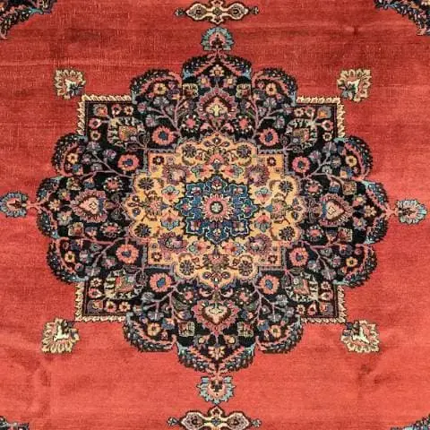

Dettagli
Un pezzo scelto con attenzione.
Un runner dal tono delicato e raffinato, ideale per zone di passaggio che richiedono eleganza senza appesantire lo spazio.
Consulenza
Se desideri un consiglio nella scelta, siamo a disposizione.
Se hai dubbi su misure, materiali o stile, possiamo aiutarti a individuare il pezzo piu' adatto ai tuoi spazi con la cura e l'esperienza del negozio.